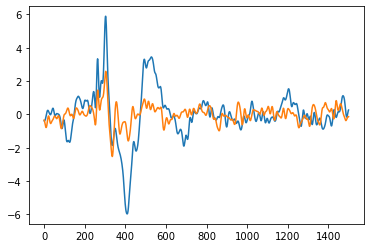
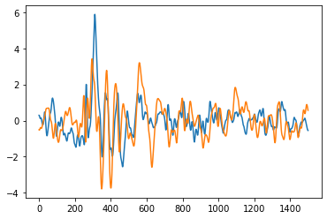
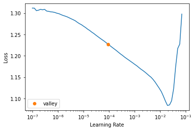
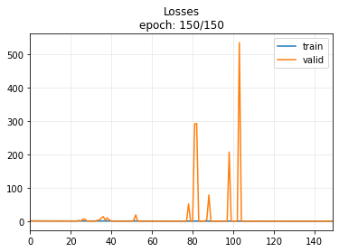
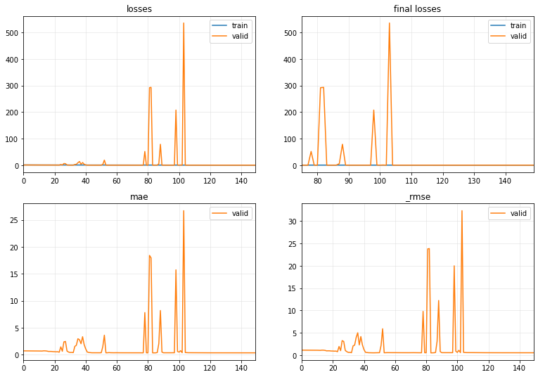
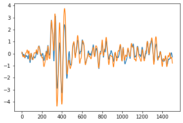
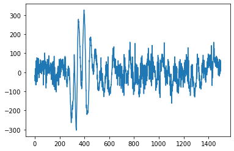
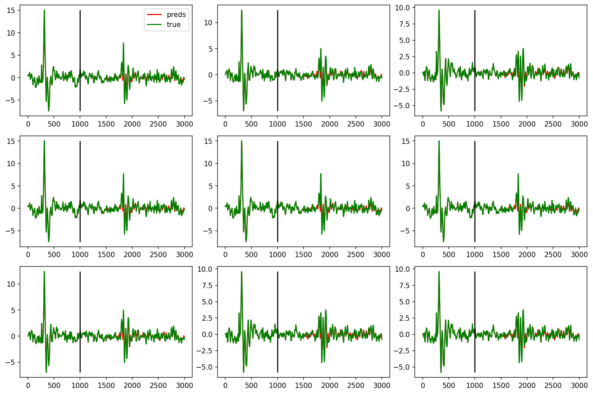

from monitosed.data.core import *
from monitosed.generation.core import *generation.cnn.vr_rest
Fill in a module description here
import mat73
from fastcore.xtras import Path
import pandas as pd
import numpy as np
from tsai.all import *Prepare Data
path_rest = Path("../_data/foot1/Rest"); path_rest.ls()
path_vr = Path("../_data/foot1/VR"); path_vr.ls()(#15) [Path('../_data/foot1/VR/VR20_VRstim_data_clean.mat'),Path('../_data/foot1/VR/VR23_VRStim_data_clean.mat'),Path('../_data/foot1/VR/VR31_VRstim_data_clean.mat'),Path('../_data/foot1/VR/VR26_VRStim_data_clean.mat'),Path('../_data/foot1/VR/VR27_VRstim_data_clean.mat'),Path('../_data/foot1/VR/VR34_VRstim_data_clean.mat'),Path('../_data/foot1/VR/VR41_VRStim_data_clean.mat'),Path('../_data/foot1/VR/VR51_VRStim_data_clean.mat'),Path('../_data/foot1/VR/VR35_VRStim_data_clean.mat'),Path('../_data/foot1/VR/VR40_VRstim_data_clean.mat')...]Load data
from tqdm.notebook import tqdm
import mat73
import scipydef load_mats(path, max_len=None):
mats = []
length = ifnone(max_len, len(path.ls()))
for mat in tqdm(sorted(path.ls())[:length]):
try:
print(f"Loading: {mat.name}")
mats.append(mat73.loadmat(mat))
except:
print(f"Loading: {mat.name}")
mats.append(scipy.io.loadmat(mat))
return matsmats_rest = load_mats(path_rest)
mats_vr = load_mats(path_vr)Loading: VR20_Reststim_data_clean.mat
Loading: VR23_RestStim_data_clean.mat
Loading: VR26_Reststim_data_clean.mat
Loading: VR27_Reststim_data_clean.mat
Loading: VR31_Reststim_data_clean.mat
Loading: VR35_RestStim_data_clean.mat
Loading: VR38_RestStim_data_clean.mat
Loading: VR40_RestStim_data_clean.mat
Loading: VR41_RestStim_data_clean.mat
Loading: VR51_RestStim_data_clean.mat
Loading: VR52_RestStim_data_clean.mat
Loading: VR57_Reststim_data_clean.mat
Loading: VR59_Reststim_data_clean.mat
Loading: VR60_Reststim_data_clean.mat
Loading: VR20_VRstim_data_clean.mat
Loading: VR23_VRStim_data_clean.mat
Loading: VR26_VRStim_data_clean.mat
Loading: VR27_VRstim_data_clean.mat
Loading: VR31_VRstim_data_clean.mat
Loading: VR35_VRStim_data_clean.mat
Loading: VR38_VRStim_data_clean.mat
Loading: VR40_VRstim_data_clean.mat
Loading: VR41_VRStim_data_clean.mat
Loading: VR51_VRStim_data_clean.mat
Loading: VR52_VRStim_data_clean.mat
Loading: VR57_VRstim_data_clean.mat
Loading: VR59_VRstim_data_clean.mat
Loading: VR60_VRstim_data_clean.mat#Optional
signal_len = 1000Get labels
The first idea is to perform forecasting, i.e. predict the future signal. To do so, we have to cut the measured signal into a past and the future we would like to predict.
/! the stimulus happens at 250
trn_len = 1000
pred_len = signal_len-trn_lenDataBlock
getters = [ItemGetter(0), ItemGetter(1)]data = np.concatenate([read_data(mat) for mat in mats_rest])
data = data[:,:,:signal_len]
data.shape(778, 173, 1000)data = np.stack([read_data(mat).mean(0) for mat in mats_rest])
data = data[:,:signal_len]
data.shape(14, 173, 1500)plt.plot(data[2][0])
plt.plot(labels[2][0])
labels = np.concatenate([read_data(mat) for mat in mats_vr])
labels = labels[:,:,:signal_len]
labels.shape(795, 173, 1000)labels = np.stack([read_data(mat).mean(0) for mat in mats_vr])
labels = labels[:,:signal_len]
labels.shape(14, 173, 1500)read_data(mats_rest[0]).shape(57, 173, 1500)x = torch.from_numpy(np.concatenate(data, axis=0)).unsqueeze(1)
y = torch.from_numpy(np.concatenate(labels, axis=0)).unsqueeze(1)
x.shape, y.shape(torch.Size([2422, 1, 1500]), torch.Size([2422, 1, 1500]))train_ix = int((1-valid_pct)*len(mats))
read_mats = [read_data(mat) for mat in mats]
rearranged_mats = [new_rearrange(mat) for mat in read_mats]
n_train_sample = np.concatenate(rearranged_mats[:train_ix]).shape[0]
return (np.arange(0, n_train_sample), np.arange(n_train_sample, np.concatenate(rearranged_mats).shape[0]))splits = create_splits(mats_rest)splits = (np.arange(0, 11), np.arange(11, 14))splits(array([ 0, 1, 2, 3, 4, 5, 6, 7, 8, 9, 10]), array([11, 12, 13]))dls = get_ts_dls(torch.tensor(x, dtype=torch.float32), torch.tensor(y, dtype=torch.float32), splits=splits, bs=128)xb, yb = dls.one_batch()
xb.shape, yb.shape(torch.Size([11, 1, 1500]), torch.Size([11, 1, 1500]))plt.plot(xb[0][0].to('cpu').numpy())
plt.plot(yb[0][0].to('cpu').numpy())
class CustomLoss(nn.Module):
def __init__(self, size_average=None, reduce=None, alpha=0.5, reduction: str = 'mean') -> None:
super(CustomLoss, self).__init__()
store_attr()
def forward(self, input: torch.Tensor, target: torch.Tensor) -> torch.Tensor:
l1 = F.l1_loss(input, target, reduction=self.reduction)
mse = F.mse_loss(input, target, reduction=self.reduction)
return self.alpha*l1 + (1-self.alpha)*mseyb.shapetorch.Size([11, 1, 1500])model = TimeSeriesModel(1, yb.shape[2])
learn = Learner(dls, model, loss_func=CustomLoss(), metrics=[mae, rmse], wd=10, cbs=ShowGraph())learn.lr_find()SuggestedLRs(valley=9.120108734350652e-05)
learn.fit_one_cycle(150, lr_max=1e-2)| epoch | train_loss | valid_loss | mae | _rmse | time |
|---|---|---|---|---|---|
| 0 | 1.299301 | 1.017650 | 0.723258 | 1.145495 | 00:00 |
| 1 | 1.258223 | 1.015414 | 0.721979 | 1.144166 | 00:00 |
| 2 | 1.226679 | 1.014164 | 0.721362 | 1.143299 | 00:00 |
| 3 | 1.201110 | 1.014524 | 0.721896 | 1.143373 | 00:00 |
| 4 | 1.179566 | 1.013083 | 0.721242 | 1.142406 | 00:00 |
| 5 | 1.160073 | 1.007014 | 0.717782 | 1.138561 | 00:00 |
| 6 | 1.148064 | 1.002438 | 0.715046 | 1.135702 | 00:00 |
| 7 | 1.139866 | 0.995614 | 0.711092 | 1.131462 | 00:00 |
| 8 | 1.131695 | 0.993450 | 0.710330 | 1.129906 | 00:00 |
| 9 | 1.123435 | 0.996208 | 0.713233 | 1.130965 | 00:00 |
| 10 | 1.115965 | 0.981732 | 0.706861 | 1.120673 | 00:00 |
| 11 | 1.109448 | 0.958713 | 0.694856 | 1.104808 | 00:00 |
| 12 | 1.102018 | 0.946586 | 0.688475 | 1.096406 | 00:00 |
| 13 | 1.095197 | 1.019580 | 0.731628 | 1.142808 | 00:00 |
| 14 | 1.087555 | 1.001774 | 0.721992 | 1.132035 | 00:00 |
| 15 | 1.077279 | 0.937915 | 0.688387 | 1.089492 | 00:00 |
| 16 | 1.068594 | 0.800658 | 0.621139 | 0.988102 | 00:00 |
| 17 | 1.061121 | 0.819594 | 0.622697 | 1.003655 | 00:00 |
| 18 | 1.051660 | 0.804017 | 0.612477 | 0.993289 | 00:00 |
| 19 | 1.040679 | 0.746105 | 0.579242 | 0.950914 | 00:00 |
| 20 | 1.028393 | 0.737224 | 0.571697 | 0.947603 | 00:00 |
| 21 | 1.016082 | 0.697171 | 0.549074 | 0.918918 | 00:00 |
| 22 | 1.002781 | 0.715865 | 0.563512 | 0.932540 | 00:00 |
| 23 | 0.988652 | 0.552900 | 0.472588 | 0.797109 | 00:00 |
| 24 | 0.974076 | 2.684968 | 1.465792 | 1.966433 | 00:00 |
| 25 | 0.958212 | 0.857588 | 0.647996 | 1.028118 | 00:00 |
| 26 | 0.942364 | 6.556168 | 2.388410 | 3.275557 | 00:00 |
| 27 | 0.928555 | 6.010875 | 2.474461 | 3.086994 | 00:00 |
| 28 | 0.914212 | 0.919987 | 0.689771 | 1.076384 | 00:00 |
| 29 | 0.900598 | 0.573817 | 0.499231 | 0.804232 | 00:00 |
| 30 | 0.891188 | 0.405629 | 0.422155 | 0.640827 | 00:00 |
| 31 | 0.881536 | 0.430032 | 0.437541 | 0.650404 | 00:00 |
| 32 | 0.867537 | 0.370618 | 0.396334 | 0.578724 | 00:00 |
| 33 | 0.856232 | 2.943511 | 1.549018 | 2.091185 | 00:00 |
| 34 | 0.846125 | 3.482603 | 1.757311 | 2.263476 | 00:00 |
| 35 | 0.834767 | 9.473005 | 2.963549 | 3.974808 | 00:00 |
| 36 | 0.823964 | 14.158696 | 2.785887 | 5.032480 | 00:00 |
| 37 | 0.814856 | 3.706322 | 2.044013 | 2.309013 | 00:00 |
| 38 | 0.809695 | 10.222559 | 3.345434 | 4.183214 | 00:00 |
| 39 | 0.801078 | 3.775189 | 1.898039 | 2.333385 | 00:00 |
| 40 | 0.791567 | 1.368609 | 1.088956 | 1.277575 | 00:00 |
| 41 | 0.784252 | 0.469283 | 0.507975 | 0.658018 | 00:00 |
| 42 | 0.776464 | 0.392174 | 0.421737 | 0.607453 | 00:00 |
| 43 | 0.768908 | 0.361280 | 0.391794 | 0.573113 | 00:00 |
| 44 | 0.761990 | 0.341300 | 0.368734 | 0.559229 | 00:00 |
| 45 | 0.754644 | 0.338397 | 0.367189 | 0.561940 | 00:00 |
| 46 | 0.748532 | 0.334776 | 0.359335 | 0.547316 | 00:00 |
| 47 | 0.741764 | 0.339404 | 0.362777 | 0.560396 | 00:00 |
| 48 | 0.734906 | 0.338133 | 0.363922 | 0.564154 | 00:00 |
| 49 | 0.728242 | 0.345272 | 0.367059 | 0.571316 | 00:00 |
| 50 | 0.721405 | 0.359911 | 0.380093 | 0.582484 | 00:00 |
| 51 | 0.715890 | 3.187883 | 1.513592 | 2.201920 | 00:00 |
| 52 | 0.709413 | 19.323849 | 3.629069 | 5.931134 | 00:00 |
| 53 | 0.703728 | 0.337647 | 0.360615 | 0.563299 | 00:00 |
| 54 | 0.697707 | 0.351220 | 0.370750 | 0.577266 | 00:00 |
| 55 | 0.691957 | 0.375552 | 0.403407 | 0.593102 | 00:00 |
| 56 | 0.686324 | 0.359031 | 0.379468 | 0.584025 | 00:00 |
| 57 | 0.681012 | 0.356424 | 0.371321 | 0.585718 | 00:00 |
| 58 | 0.676354 | 0.353348 | 0.369257 | 0.582729 | 00:00 |
| 59 | 0.671542 | 0.360544 | 0.376929 | 0.588039 | 00:00 |
| 60 | 0.666387 | 0.360036 | 0.376399 | 0.586907 | 00:00 |
| 61 | 0.662081 | 0.347083 | 0.365891 | 0.573729 | 00:00 |
| 62 | 0.658030 | 0.350275 | 0.367510 | 0.577928 | 00:00 |
| 63 | 0.653528 | 0.347404 | 0.365505 | 0.575121 | 00:00 |
| 64 | 0.649135 | 0.345062 | 0.364712 | 0.571728 | 00:00 |
| 65 | 0.644888 | 0.336439 | 0.358055 | 0.562059 | 00:00 |
| 66 | 0.640819 | 0.337560 | 0.359627 | 0.562160 | 00:00 |
| 67 | 0.636773 | 0.341842 | 0.364520 | 0.565239 | 00:00 |
| 68 | 0.632877 | 0.345887 | 0.366593 | 0.570551 | 00:00 |
| 69 | 0.629133 | 0.345524 | 0.363466 | 0.572730 | 00:00 |
| 70 | 0.625658 | 0.350955 | 0.366173 | 0.579614 | 00:00 |
| 71 | 0.622175 | 0.353335 | 0.368326 | 0.581763 | 00:00 |
| 72 | 0.618605 | 0.353628 | 0.368791 | 0.581896 | 00:00 |
| 73 | 0.615254 | 0.350779 | 0.365767 | 0.579621 | 00:00 |
| 74 | 0.612172 | 0.348024 | 0.363526 | 0.576782 | 00:00 |
| 75 | 0.608875 | 0.343143 | 0.361297 | 0.570250 | 00:00 |
| 76 | 0.605701 | 0.339032 | 0.358983 | 0.565036 | 00:00 |
| 77 | 0.602523 | 0.335442 | 0.356965 | 0.560425 | 00:00 |
| 78 | 0.599567 | 52.053436 | 7.824964 | 9.811817 | 00:00 |
| 79 | 0.596779 | 0.345568 | 0.362967 | 0.572771 | 00:00 |
| 80 | 0.593803 | 0.343511 | 0.361802 | 0.570190 | 00:00 |
| 81 | 0.590962 | 292.014709 | 18.417253 | 23.782608 | 00:00 |
| 82 | 0.588105 | 293.192688 | 17.970638 | 23.842102 | 00:00 |
| 83 | 0.585429 | 0.318886 | 0.349878 | 0.537413 | 00:00 |
| 84 | 0.582799 | 0.329727 | 0.353536 | 0.553637 | 00:00 |
| 85 | 0.580264 | 0.335279 | 0.355733 | 0.561326 | 00:00 |
| 86 | 0.577709 | 0.405445 | 0.422905 | 0.623114 | 00:00 |
| 87 | 0.575320 | 5.950220 | 2.102771 | 3.127086 | 00:00 |
| 88 | 0.572908 | 79.104721 | 8.209189 | 12.242878 | 00:00 |
| 89 | 0.570688 | 0.583856 | 0.495737 | 0.822348 | 00:00 |
| 90 | 0.568716 | 0.355095 | 0.368391 | 0.585000 | 00:00 |
| 91 | 0.566530 | 0.353138 | 0.366771 | 0.582920 | 00:00 |
| 92 | 0.564377 | 0.353728 | 0.367086 | 0.583512 | 00:00 |
| 93 | 0.562273 | 0.348275 | 0.363287 | 0.577407 | 00:00 |
| 94 | 0.560274 | 0.348354 | 0.363653 | 0.577231 | 00:00 |
| 95 | 0.558281 | 0.352818 | 0.367719 | 0.581428 | 00:00 |
| 96 | 0.556367 | 0.361564 | 0.376456 | 0.589078 | 00:00 |
| 97 | 0.554535 | 0.354573 | 0.369715 | 0.582829 | 00:00 |
| 98 | 0.552740 | 207.875122 | 15.748264 | 19.999113 | 00:00 |
| 99 | 0.550939 | 0.727575 | 0.613416 | 0.917282 | 00:00 |
| 100 | 0.549121 | 0.449450 | 0.489551 | 0.639457 | 00:00 |
| 101 | 0.547398 | 1.002707 | 0.755015 | 1.117518 | 00:00 |
| 102 | 0.545631 | 0.363296 | 0.378168 | 0.590012 | 00:00 |
| 103 | 0.543934 | 535.617859 | 26.717255 | 32.317467 | 00:00 |
| 104 | 0.542293 | 0.411261 | 0.410266 | 0.640823 | 00:00 |
| 105 | 0.540655 | 0.381312 | 0.388425 | 0.611153 | 00:00 |
| 106 | 0.539131 | 0.369158 | 0.380665 | 0.597801 | 00:00 |
| 107 | 0.537601 | 0.364720 | 0.378244 | 0.592530 | 00:00 |
| 108 | 0.536048 | 0.365995 | 0.379692 | 0.593320 | 00:00 |
| 109 | 0.534614 | 0.366753 | 0.379496 | 0.594836 | 00:00 |
| 110 | 0.533135 | 0.364949 | 0.377070 | 0.593912 | 00:00 |
| 111 | 0.531748 | 0.359695 | 0.372092 | 0.589401 | 00:00 |
| 112 | 0.530377 | 0.342307 | 0.362188 | 0.568597 | 00:00 |
| 113 | 0.529005 | 0.352479 | 0.365951 | 0.582329 | 00:00 |
| 114 | 0.527717 | 0.354641 | 0.367223 | 0.584691 | 00:00 |
| 115 | 0.526419 | 0.353655 | 0.366550 | 0.583328 | 00:00 |
| 116 | 0.525128 | 0.351254 | 0.365145 | 0.580477 | 00:00 |
| 117 | 0.523867 | 0.348317 | 0.363499 | 0.577082 | 00:00 |
| 118 | 0.522610 | 0.345766 | 0.362206 | 0.573952 | 00:00 |
| 119 | 0.521395 | 0.343867 | 0.361349 | 0.571540 | 00:00 |
| 120 | 0.520199 | 0.342780 | 0.361077 | 0.570028 | 00:00 |
| 121 | 0.519054 | 0.341788 | 0.360746 | 0.568650 | 00:00 |
| 122 | 0.517948 | 0.340971 | 0.360423 | 0.567502 | 00:00 |
| 123 | 0.516865 | 0.340661 | 0.360431 | 0.567002 | 00:00 |
| 124 | 0.515796 | 0.340025 | 0.360110 | 0.566148 | 00:00 |
| 125 | 0.514733 | 0.339685 | 0.359925 | 0.565718 | 00:00 |
| 126 | 0.513681 | 0.339166 | 0.359564 | 0.565151 | 00:00 |
| 127 | 0.512676 | 0.338888 | 0.359298 | 0.564931 | 00:00 |
| 128 | 0.511653 | 0.338551 | 0.358970 | 0.564645 | 00:00 |
| 129 | 0.510670 | 0.338529 | 0.358871 | 0.564791 | 00:00 |
| 130 | 0.509719 | 0.338255 | 0.358602 | 0.564544 | 00:00 |
| 131 | 0.508790 | 0.338192 | 0.358519 | 0.564659 | 00:00 |
| 132 | 0.507888 | 0.338087 | 0.358408 | 0.564732 | 00:00 |
| 133 | 0.506987 | 0.338086 | 0.358363 | 0.564845 | 00:00 |
| 134 | 0.506119 | 0.337958 | 0.358238 | 0.564723 | 00:00 |
| 135 | 0.505267 | 0.337719 | 0.358037 | 0.564449 | 00:00 |
| 136 | 0.504459 | 0.337478 | 0.357850 | 0.564143 | 00:00 |
| 137 | 0.503630 | 0.337290 | 0.357705 | 0.563875 | 00:00 |
| 138 | 0.502850 | 0.337115 | 0.357570 | 0.563616 | 00:00 |
| 139 | 0.502065 | 0.336944 | 0.357449 | 0.563367 | 00:00 |
| 140 | 0.501306 | 0.336740 | 0.357309 | 0.563082 | 00:00 |
| 141 | 0.500547 | 0.336555 | 0.357180 | 0.562814 | 00:00 |
| 142 | 0.499798 | 0.336417 | 0.357083 | 0.562609 | 00:00 |
| 143 | 0.499095 | 0.336318 | 0.357013 | 0.562461 | 00:00 |
| 144 | 0.498389 | 0.336226 | 0.356945 | 0.562328 | 00:00 |
| 145 | 0.497687 | 0.336172 | 0.356904 | 0.562245 | 00:00 |
| 146 | 0.497021 | 0.336132 | 0.356875 | 0.562187 | 00:00 |
| 147 | 0.496392 | 0.336107 | 0.356857 | 0.562150 | 00:00 |
| 148 | 0.495728 | 0.336092 | 0.356848 | 0.562131 | 00:00 |
| 149 | 0.495142 | 0.336088 | 0.356845 | 0.562124 | 00:00 |


in_valid, pred_valid, true_valid = learn.get_preds(with_input=True)#plt.plot(in_valid[2][0].to('cpu').numpy())
plt.plot(pred_valid[].to('cpu').numpy())
plt.plot(true_valid[2][0].to('cpu').numpy())
inf = read_data(mats_rest[0])in_valid.shapetorch.Size([3, 1, 1500])inf[1][0].max()29.977590216479552torch.tensor(inf[0][0], dtype=torch.float32).unsqueeze(0).unsqueeze(0).shapetorch.Size([1, 1, 1500])torch.tensor(inf[0][0], dtype=torch.float32).unsqueeze(0).unsqueeze(0).to('cuda:0')tensor([[[ 0.4247, 0.9331, 1.5741, ..., -0.8875, -2.1496, -3.0908]]],
device='cuda:0')test_probas, test_targets, test_preds = learn.get_X_preds(torch.tensor(inf[1][0], dtype=torch.float32).unsqueeze(0).unsqueeze(0), with_decoded=True)plt.plot(test_preds[0])
learn.model(torch.tensor(inf[0][0], dtype=torch.float32).unsqueeze(0).unsqueeze(0).to('cuda:0'))tensor([[-26.7151, 18.9569, -21.5338, ..., 42.8832, 9.8944, 10.3061]],
device='cuda:0', grad_fn=<AddmmBackward0>)fig, axes = plt.subplots(ncols=3, nrows=3, figsize=(12,8), dpi=150)
for i, ax in enumerate(axes.flat):
plot_idx = np.random.choice(np.arange(0, len(in_valid)))
true = np.concatenate([in_valid.numpy()[plot_idx,-1,:].reshape(-1), true_valid.numpy()[plot_idx,:].reshape(-1)])
pred = np.concatenate([in_valid.numpy()[plot_idx,-1,:].reshape(-1), pred_valid[plot_idx,:].reshape(-1)])
ax.plot(pred, color='red', label='preds')
ax.plot(true, color='green', label='true')
ax.vlines(trn_len-1, np.min(true), np.max(true), color='black')
if i == 0: ax.legend()
fig.tight_layout();